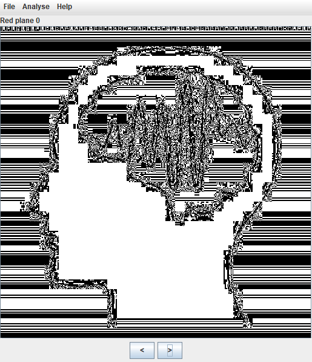
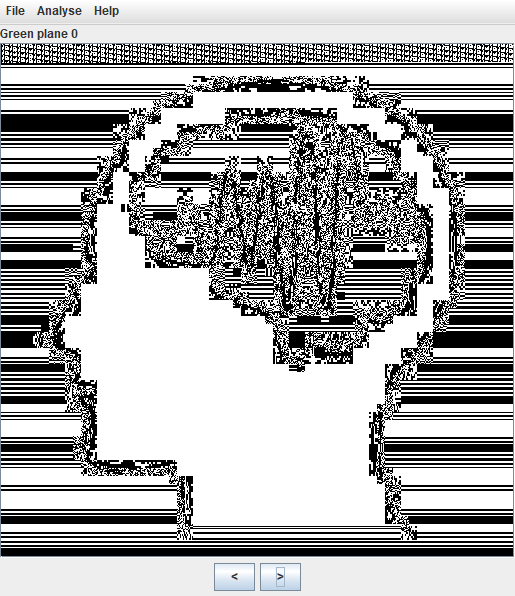
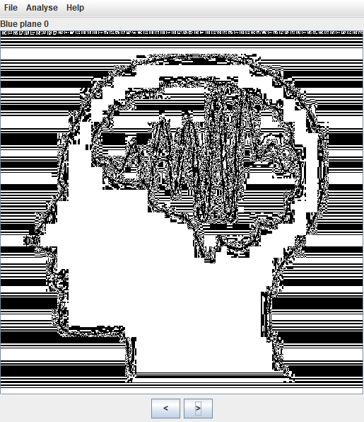
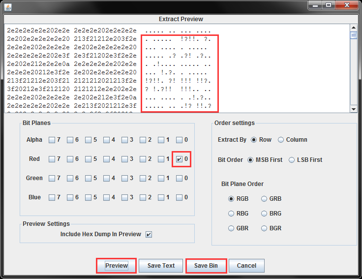
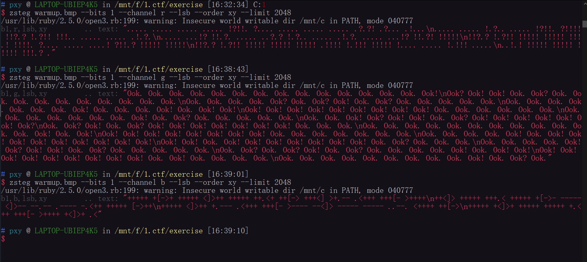
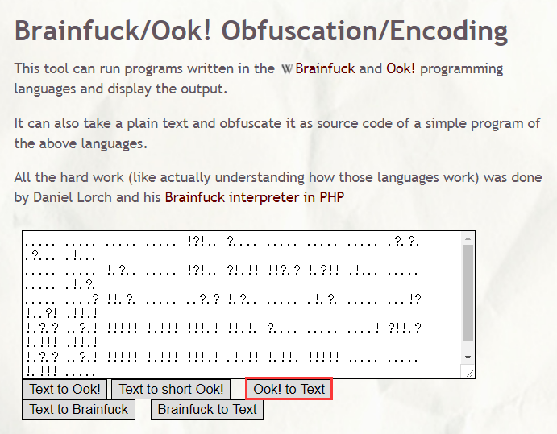
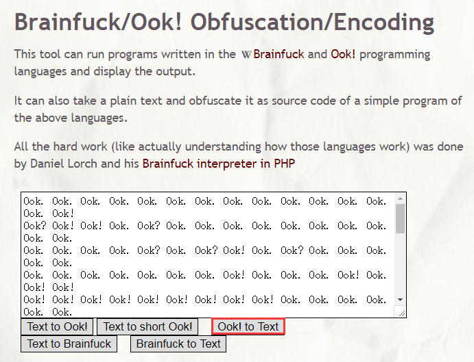
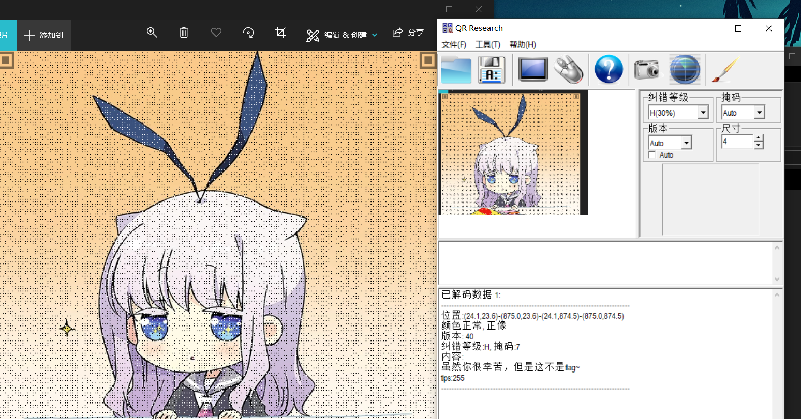

巅峰极客¶
warmup¶
LSB隐写¶
这部分知识就不细说了
定位隐写点¶
浏览不同的通道
Red plane 0

Green plane 0

Blue plane 0

摘取隐写信息¶

如法炮制得到不同通道的信息
换一种方式¶
$ zsteg -h
Usage: zsteg [options] filename.png [param_string]
-c, --channels X channels (R/G/B/A) or any combination, comma separated
valid values: r,g,b,a,rg,rgb,bgr,rgba,...
-l, --limit N limit bytes checked, 0 = no limit (default: 256)
-b, --bits N number of bits (1..8), single value or '1,3,5' or '1-8'
--lsb least significant BIT comes first
--msb most significant BIT comes first
-P, --prime analyze/extract only prime bytes/pixels
-a, --all try all known methods
-o, --order X pixel iteration order (default: 'auto')
valid values: ALL,xy,yx,XY,YX,xY,Xy,bY,...
-E, --extract NAME extract specified payload, NAME is like '1b,rgb,lsb'
-v, --verbose Run verbosely (can be used multiple times)
-q, --quiet Silent any warnings (can be used multiple times)
-C, --[no-]color Force (or disable) color output (default: auto)
PARAMS SHORTCUT
zsteg fname.png 2b,b,lsb,xy ==> --bits 2 --channel b --lsb --order xy
使用如下命令：
$ zsteg warmup.bmp --bits 1 --channel r --lsb --order xy --limit 2048 $ zsteg warmup.bmp --bits 1 --channel g --lsb --order xy --limit 2048 $ zsteg warmup.bmp --bits 1 --channel b --lsb --order xy --limit 2048
--bits 1：每次只摘取颜色通道中的第 1 个比特。--channel r：只摘取红色通道的比特位。--lsb：按最低有效位优先的顺序进行摘取。--order xy：按照从左至右、从上至下的顺序对图像素点进行摘取。--limit 2048：最多摘取输出 2048 字节。

zsteg warmup.bmp --all可以自动尝试所有的方式
Short Ook!¶
由 red.bin 得到的隐写信息如下所示：
..... ..... ..... ..... !?!!. ?.... ..... ..... ..... .?.?! .?... .!... ..... ..... !.?.. ..... !?!!. ?!!!! !!?.? !.?!! !!!.. ..... ..... .!.?. ..... ...!? !!.?. ..... ..?.? !.?.. ..... .!.?. ..... ...!? !!.?! !!!!! !!?.? !.?!! !!!!! !!!!! !!!.! !!!!. ?.... ..... ....! ?!!.? !!!!! !!!!! !!?.? !.?!! !!!!! !!!!! !!!!! .!!!! !.!!! !!!!! !.... ..... !.!!! ..... ..!.! !!!!! !!!!! !!!!! !!!.? .
以上编码方式称为 Short Ook!，其包含的字符集如下所示：
| 字符 | 含义 | ASCII 码 |
|---|---|---|
| ! | 叹号 | 33（\x21） |
| . | 句号 | 46（\x2E） |
| ? | 问号 | 63（\x3F） |
将上述隐写信息用工具解码后得到字符串 flag{db640436-：

Ook!¶
由 green.bin 得到的隐写信息如下所示：
Ook. Ook. Ook. Ook. Ook. Ook. Ook. Ook. Ook. Ook. Ook. Ook. Ook. Ook. Ook! Ook? Ook! Ook! Ook. Ook? Ook. Ook. Ook. Ook. Ook. Ook. Ook. Ook. Ook. Ook. Ook. Ook. Ook. Ook. Ook? Ook. Ook? Ook! Ook. Ook? Ook. Ook. Ook. Ook. Ook. Ook. Ook. Ook. Ook. Ook. Ook. Ook. Ook! Ook. Ook. Ook. Ook! Ook. Ook! Ook! Ook! Ook! Ook! Ook! Ook! Ook! Ook! Ook! Ook! Ook. Ook. Ook. Ook. Ook. Ook. Ook. Ook. Ook. Ook. Ook. Ook. Ook. Ook! Ook. Ook? Ook. Ook. Ook. Ook. Ook. Ook. Ook. Ook! Ook? Ook! Ook! Ook. Ook? Ook! Ook! Ook! Ook! Ook! Ook! Ook? Ook. Ook? Ook! Ook. Ook? Ook! Ook! Ook! Ook! Ook! Ook! Ook! Ook. Ook. Ook. Ook. Ook. Ook. Ook. Ook. Ook. Ook. Ook. Ook. Ook. Ook. Ook. Ook! Ook. Ook! Ook! Ook! Ook! Ook! Ook! Ook! Ook! Ook! Ook. Ook. Ook. Ook. Ook. Ook. Ook. Ook. Ook. Ook. Ook. Ook! Ook. Ook! Ook! Ook! Ook! Ook! Ook! Ook! Ook! Ook! Ook! Ook! Ook. Ook! Ook! Ook! Ook! Ook! Ook! Ook! Ook. Ook? Ook. Ook. Ook. Ook. Ook. Ook. Ook. Ook! Ook? Ook! Ook! Ook. Ook? Ook. Ook. Ook. Ook. Ook. Ook. Ook? Ook. Ook? Ook! Ook. Ook? Ook. Ook. Ook. Ook. Ook! Ook. Ook! Ook! Ook! Ook! Ook! Ook! Ook! Ook! Ook! Ook! Ook! Ook. Ook! Ook. Ook. Ook. Ook. Ook. Ook. Ook. Ook. Ook. Ook. Ook. Ook. Ook. Ook! Ook. Ook? Ook.
以上编码方式称为 Ook!，其包含的字符集如下所示：
| 字符 | 含义 | ASCII 码 |
|---|---|---|
| ! | 叹号 | 33（\x21） |
| . | 句号 | 46（\x2E） |
| ? | 问号 | 63（\x3F） |
| O | 大写字母 O | 79（\x4F） |
| k | 小写字母 k | 107（\x6B） |
| o | 小写字母 o | 111（\x6F） |
将上述隐写信息用工具解码后得到字符串 7839-4050-8339：

Brainfuck¶
由 blue.bin 得到的隐写信息如下所示：
+++++ +[->+ +++++ <]>++ +++++ ++.<+ ++[-> +++<] >+.-- .<+++ +++[- >++++ ++<]> +++++ +++.< +++++ +[->- ----- <]>-- --.-- .---- -.<++ +++++ [->++ +++++ <]>++ +.--- .<+++ +++[- >---- --<]> ----- ----- ..--. <++++ ++[-> +++++ +<]>+ +++++ +++++ +.<++ +++[- >++++ +<]>+ .<
以上编码方式称为 Brainfuck，其包含的字符集如下所示：
| 字符 | 含义 | ASCII 码 |
|---|---|---|
| + | 加号 | 43（\x2B） |
| - | 减号 | 45（\x2D） |
| . | 句号 | 46（\x2E） |
| < | 小于号 | 60（\x3C） |
| > | 大于号 | 62（\x3E） |
| [ | 左方括号 | 91（\x5B） |
| ] | 右方括号 | 93（\x5D） |
将上述隐写信息用工具解码后得到字符串 -75a972fc553c}：
loli¶

这里有个提示 255，也就是 0xFF。
接着用 010 editor 打开图片发现文件末尾多了一块。